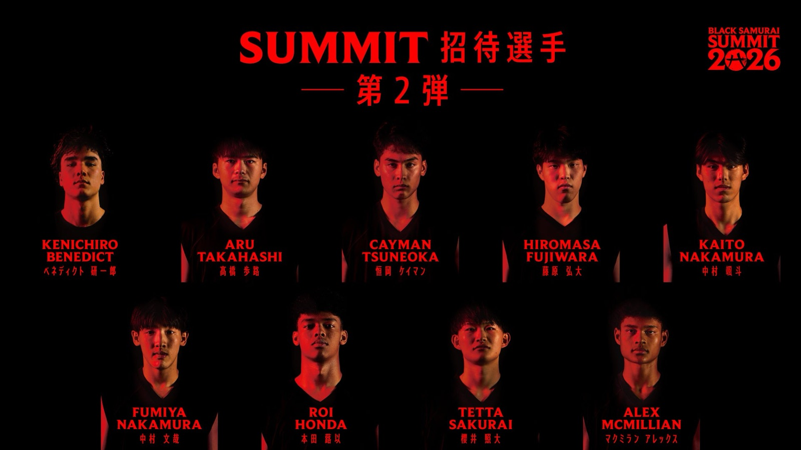

大濠から3人、開志国際から2人 —— BLACK SAMURAI SUMMIT 2026、招待選手第二弾と指導陣が発表
名古屋に集まるU18の顔ぶれが、また少し見えてきた。八村塁主宰の次世代育成プロジェクト「BLACK SAMURAI SUMMIT 2026」について、BLACK SAMURAI事務局（ディグポ有限会社）が7月22日、招待選手の第二弾と指導陣を発表した。舞台は2026年8月6日（木）から8日（土）、愛知・名古屋のIG ARENA。招待されたU18選手たちがTeam RedとTeam Blackに分かれ、最終日のGAME DAYで本格的な試合を戦う。

高校バスケの強豪から、海外組まで
第二弾で名前が挙がった選手の所属先は、福岡大学附属大濠（福岡）から3名、開志国際（新潟）から2名、北陸学院（石川）、東山（京都）、沖縄水産（沖縄）から各1名。さらに海外からMasters Academy Internationalの選手も加わる。全国の強豪校と海外組が同じロスターに並ぶ——このプロジェクトが掲げる「世界基準の挑戦環境」が、そのまま招待リストに表れている。
教えるのは、最前線の指揮官たち
指導陣として発表されたのは、Bリーグの最前線で指揮を執る現役ヘッドコーチや、高校バスケットボール界の名将たち。日本トップクラスのコーチ陣がU18の選抜選手を直接指導する。そして本試合のMVPには、NBA・アメリカでの観戦ツアーが贈られる。挑戦の先に、はっきりした景色が用意されている。
最後の1枠は、神戸で決まる
招待選手の第三弾は、サミット開催初日の8月6日までに発表される予定。そのうち1枠は、8月4日・5日の「Daiichi Life Group PRESENTS BLACK SAMURAI KOBE CAMP」で優秀な成績を収めた選手に与えられる。神戸のコートが、名古屋への最後の扉になる。
出典: ディグポ有限会社（BLACK SAMURAI事務局）プレスリリース「八村塁主宰・次世代育成プロジェクト『BLACK SAMURAI SUMMIT 2026』招待選手第二弾＆超豪華指導陣を発表」（PR TIMES・2026年7月22日）
https://prtimes.jp/main/html/rd/p/000000011.000177045.html